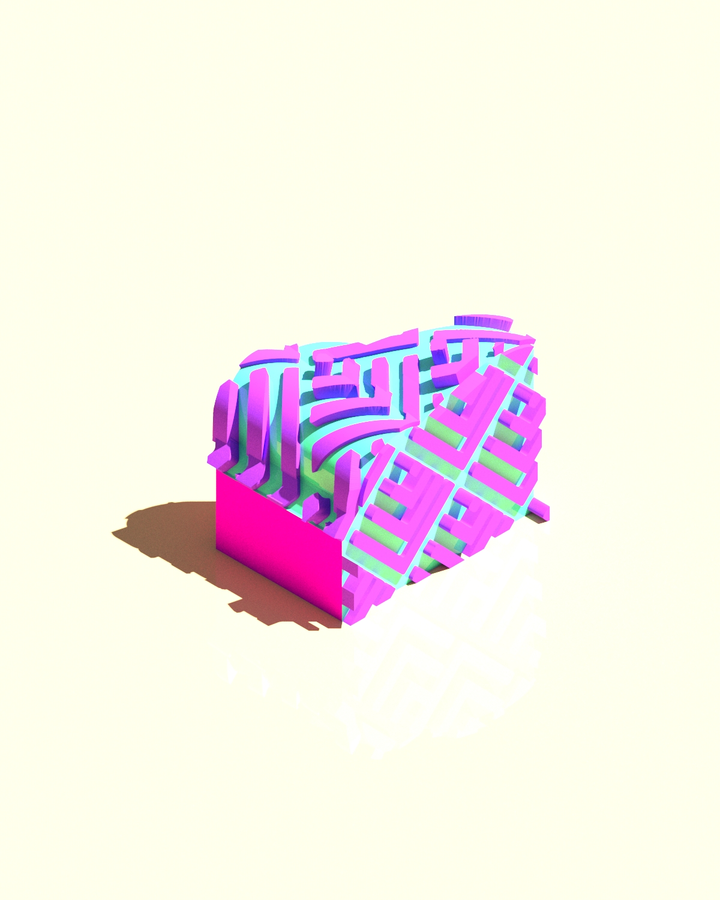

CSMA 111
Professor Cody Miner
This was an interesting project where we made abstract, geometric chunks and projected tessellations on them. We would then merge the tessellations with the chunks to make these new shapes. We then chose our own color schemes and rendered out the chunks for the best quality. The project challenged our knowledge of Rhino and forced us to learn a great deal of Rhino commands.